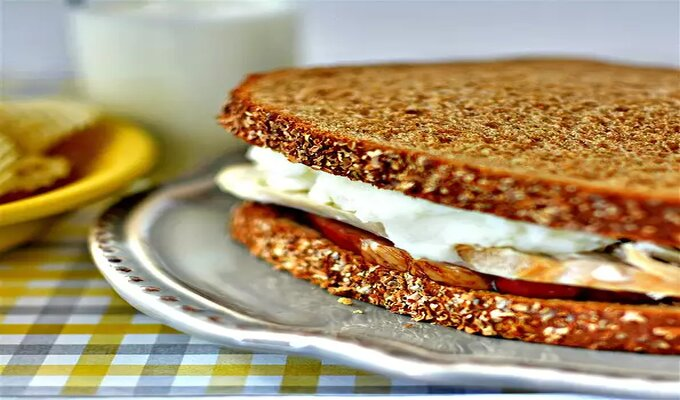

Thanksgiving Sandwich

This is something my 11 year old daughter made after Thanksgiving; it is the best sandwich you will ever taste.
Ingredients:
- 8 slices ham
- 2 thick slices leftover roast turkey
- ½ cup mashed potatoes, or as needed
- 4 slices bread
Steps:
- Place ham, turkey, and mashed potatoes on a microwave-safe plate and cook in the microwave until heated through, about 2 minutes.
- Lay out two slices of bread; place 4 slices of ham on each slice of bread.
- Lay out remaining two slices of bread; place 1 slice of turkey on each slice of bread. Spread 1/2 the potatoes on top of each turkey slice.
Place turkey slice of bread together with ham slice of bread to form sandwiches.